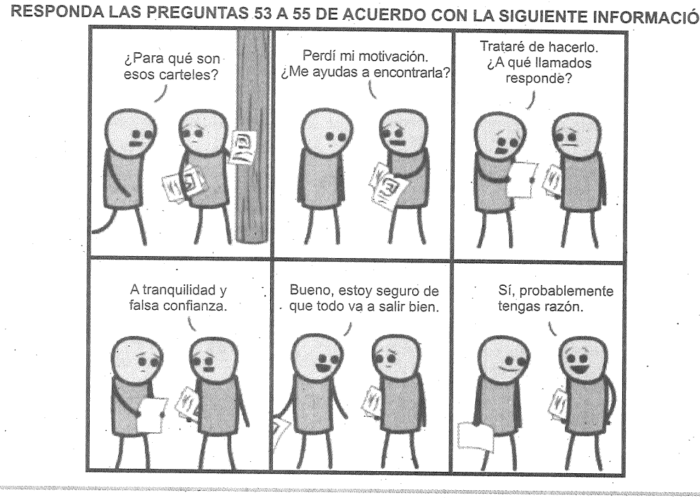
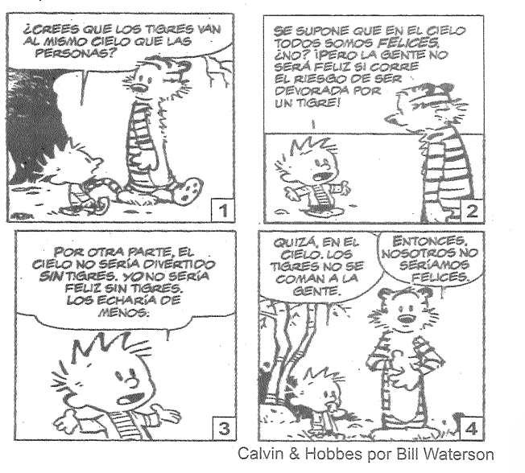
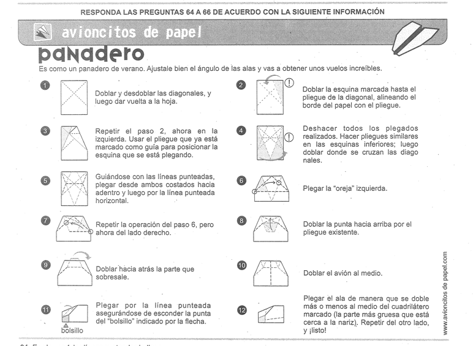

Selecciona la respuesta que consideres correcta para cada pregunta.
Debe tenerse presente que un Estado puede adoptar tres politicas distintas en lo que se refiere al matrimonio, no solo dos. Puede 1) adoptar la politica tradicional y reconocer solo jos matrimonios entre un hombre y una mujer, o puede 2) hacer lo que han hecho varios Estados y reconocer el matrimonio entre personas del mismo sexo tal y como reconoce el matrimonio entre un hombre y una mujer o puede 3) renunciar a reconocer el matrimonio, del tipo que sea, y dejar ese papel a asociaciones privadas.
La política 3) es puramente hipotética, al menos en Estados Unidos; ninguno de sus estados ha dejado por ahora de reconocer que oficiar matrimonios sea una de sus funciones. Pero merece, no obstante, que se la examine, ya que arroja luz sobre los argumentos a favor y en contra del matrimonio entre personas del mismo sexo.
La politica 3) es la solución libertaria ideal al debate del matrimonio. No pide la abolición del matrimonio, pero si del matrimonio en cuanto Institución sancionada por el Estado. La mejor forma de definirla serla diciendo que "desoficializa" el matrimonio. Así como desoficializar la religión significa prescindir de una Iglesia oficial del Estado (mientras se deja que haya Iglesias independientes del Estado), desoficializar el matrimonio significaria prescindir del matrimonio como función oficial del Estado.
El periodista Michael Kinsley defiende esta politica como forma de salir de lo que a él le parece un conflicto sobre el matrimonio del que no cabe esperar que se zanje. Los que abogan por el matrimonio gay alegan que restringir el matrimonio a los heterosexuales es una forma de discriminación. Los que se oponen aseveran que si el Estado avala el matrimonio gay, de tolerar la homosexualidad pasará a apoyarla. La solución, escribe Kinsley, consiste en "acabar con la institución del matrimonio sancionado por el Estado" y "privatizar el matrimonio". Que la gente se case como le apetezca, sin que el Estado haya de sancionario o interferir.
Tomado de: Sandel, M. (2012). Justicia. Hacemos lo que debemos? Barcelona: Editorial DEBOLSILLO, pp. 288-289.26. De acuerdo con el texto, quienes defienden el matrimonio homosexual piensan que privilegiar el matrimonio heterosexual es
27. De acuerdo con el periodista Kinsley, citado en el texto, que el Estado intervenga en el matrimonio entre personas
Cuidado con lo que yo llamo feminismo light. Es la idea de la igualdad femenina condicional. Rechézala de plano, por favor. Es una idea vacua, fallida y tranquilizadora. Ser feminista es como estar embarazada. Lo estás o no lo estás. O crees en la plena igualdad entre hombres y mujeres o no. El feminismo light emplea analogías como "El es la cabeza y tú el cuello". O "El conduce, pero tú viajas en el asiento delantero". Aún más preocupante es que dentro del feminismo light está la idea de que los hombres son superiores por naturaleza, pero deben tratar bien a las mujeres, No, No, No.
El bienestar de una mujer debe basarse en algo más que la benevolencia masculina. El feminismo light recurre al lenguaje de la "permisión". Theresa May es la primera ministra británica y un diario progresista de su país describía así a su marido: "Philip May es conocido en la politica por ser un hombre que ha dado un paso atrás para permitir que sea su mujer, Theresa, quien brille". Permitir. Démosle la vuelta. Theresa May ha permitido a su marido brillar. Tiene sentido? Si Philip May fuera primer ministro quizá oiriamos que su esposa le ha "apoyado" desde un segundo plano o que está "detrás de él" o "a su lado", pero jamás que le ha "permitido" brillar.
La triste verdad es que nuestro mundo está repleto de hombres y mujeres a quienes no les gustan las mujeres poderosas. Nos han condicionado tanto con que el poder es masculino, que una mujer poderosa nos parece una aberración. Y como tal la vigilan. De una mujer poderosa nos preguntamos: ¿Es humilde? ¿Sonrie? ¿Es lo bastante agradecida? ¿Tiene también su lado doméstico? Preguntas que no nos planteamos de los hombres poderosos, lo cual prueba que no nos incomoda el poder en si, sino las mujeres. Juzgamos más duramente a las mujeres poderosas que a los hombres poderosos. Y el feminismo light lo hace posible.
Ngozi Adichie, Ch. (2017). Querida Ijeawele. Cómo educar en el feminismo. Literatura Random House28. El enunciado "ser feminista es como estar embarazada" quiere decir que
29. ¿Cuál de las siguientes opciones sintetiza mejor el contenido del primer párrafo?
30. De acuerdo con el texto, es válido afirmar que el feminismo light
Uno de los hechos más sorprendentes en el estudio del arte paleolitico es la organización de las figuras sobre las paredes de las cavernas. El número de las especies animales representadas es poco elevado y sus relaciones topográficas son constantes: bisonte y caballo ocupan el centro de los paneles, cabra montés y ciervos los enmarcan sobre los bordes, leones y rinocerontes se sitúan en la periferia.
El mismo tema se repite varias veces en la misma caverna; se vuelve a encontrar lo mismo, pese a algunas variantes, de una caverna a la otra. Se trata realmente, por consiguiente, de una cosa distinta a la de la representación accidental de animales de caza, de una cosa diferente a la "escritura", de una cosa distinta también a los cuadros.
Leroi-Gourhan, A. (1947). Le geste et la parole. Ed. A Michel (Sec. 1, cap. 4).31. De acuerdo con el texto, la organización de las figuras sobre las paredes de las cavernas es un hecho sorprendente porque
32. ¿Cuál de las siguientes opciones expresa mejor una conclusión del texto?
33. Considere los siguientes dos fragmentos... ¿Cuál de las siguientes opciones describe mejor la relación entre los fragmentos anteriores?
Desde Van Gogh hasta Kanye West, la figura del artista atormentado acecha en la imaginación popular. Pero la clave para la creatividad tiene poco que ver con la angustia: las ideas más revolucionarias a menudo surgen de la relajación...
La creatividad ocurre cuando nuestra mente está desenfocada, fantaseando u ociosa...
El problema es que muchos pasamos dias enteros sin poner nuestro cerebro a descansar...
Por suerte, la ciencia respalda varios hábitos que podemos desarrollar para mejorar nuestra creatividad...
Sepala, E. (2017) Happiness research shows the biggest obstacle to creativity is being too busy.34. En el texto, el autor menciona los casos de Tesla y Eisntein para sostener que la clave de la creatividad no siempre tiene que ver con la angustia. Estos ejemplos son
35. ¿Cuál de las siguientes opciones es una sintesis adecuada del primer párrafo?
36. El texto
37. En la frase "Asimismo, Albert Einstein recurria a Mozart cuando necesitaba inspiración...", la palabra "Asimismo" se usa para
De ratones y hombres (Fragmento)
El guarda de seguridad entreabrió la puerta y el patrón entró al lugar con pasos breves.
-Escribi a la agencia que necesitaba dos trabajadores para esta mañana. ¿Tienen sus documentos?...
(Continúa el diálogo entre Jorge, Charlie y el patrón, donde Jorge habla por Charlie destacando su fuerza)...
Steinbeck, J. (2009), De ratones y hombres. Ediciones Edhasa38. ¿Cómo se relaciona la voz del narrador con los hechos contados?
39. Considere el fragmento: "Jorge lo miró con enojo, y Charlie bajó la cara, avergonzado de haber olvidado sus indicaciones". ¿Cuál de las siguientes descripciones presenta una perspectiva similar?
40. En el texto, el patrón le dice a Jorge: "Entonces, ¿por qué no dejas que él me conteste?" ¿Cuál es la intención del patrón?
41. En la historia, ¿quién abrió una libreta por donde habia un lápiz metido entre las hojas?
42. Según el texto, Jorge considera que Charlie es bueno para trabajar porque
Ética para Amador (Fragmento)
Quieres darte la buena vida: estupendo. Pero también quieres que esa buena vida no sea la buena vida de una coliflor o de un escarabajo... sino una buena vida humana. Es lo que te corresponde, creo yo. Y estoy seguro de que a ello no renunciarias por nada del mundo. Ser humano, ya lo hemos indicado antes, consiste principalmente en tener relaciones con los otros seres humanos...
Savater, F. (1991). Ética para Amador. Ariel43. ¿Qué tipo de estrategia argumentativa utiliza el autor para convencer al lector de su posición?
44. ¿Qué función cumple el fragmento inicial de la coliflor al interior del texto?
45. Relación entre (1) "y si la soledad es completa..." y (2) "...todas las cosas resultan tristes inevitablemente".
46. ¿El fragmento sobre el dinero y las ropas constituye una razón a favor de la tesis presentada?
47. ¿Cuál podría reemplazar, sin cambiar el sentido, la palabra "deslumbrar"?
El pez rojo
Ayer por la tarde murió Oblomov, nuestro último pez rojo. Lo intui hace varios días cuando apenas lo vi moverse dentro de su pecera redonda. Tampoco saltaba como antes para recibir la comida o para perseguir los rayos del sol que alegraban su hábitat...
Nettel, G. (2013). El matrimonio de los peces rojos. Editorial Páginas de Espuma.48. En el texto, la expresión "comportamientos subterráneos" se refiere a:
49. La palabra "intuí" puede ser reemplazada por:
50. En el texto, la muerte de Oblomov es algo
51. ¿Cuál es el propósito del texto?
52. ¿Con cuál parte del relato sobre el pez rojo se relaciona el fragmento de la pregunta al marido?

53. Al afirmar "estoy seguro de que todo va a salir bien", uno de los personajes muestra
54. ¿Qué acción se ilustra en la primera viñeta de la caricatura?
55. En la caricatura, el término "tranquilidad" se puede reemplazar por:
¿LA VIDA NO TIENE SENTIDO?
En ocasiones la mayoría de las personas sentimos que la vida es absurda, y algunos lo sienten de manera vívida y continua. Pero las razones que usualmente se ofrecen en defensa de esa convicción son patentemente inadecuadas: no podrian explicar por qué la vida es absurda...
Nagel, T. (1971). The Absurd. En The Journal of Philosophy.56. Considere el enunciado: "La felicidad es el fin último de la vida". Este enunciado permite
57. Considere el resumen presentado del texto anterior. El resumen es

58. De acuerdo con la caricatura, el niño y los tigres no pueden ser felices en el cielo porque
Querido amigo, Usted ha decidido dedicarse a la literatura, ¿ahora qué?
Su decisión de asumir su afición por la literatura como un destino deberá convertirse en servidumbre, en nada menos que esclavitud. Para explicarlo de una manera gráfica, le diré que acaba usted de hacer algo que, por lo visto, hacían en el siglo XIX algunas damas espantadas con el grosor de su cuerpo, que, a fin de recobrar una silueta de silfide, se tragaban una solitaria...
Vargas Llosa, M. (2011). Parábola de la solitaria.59. Al comentar que algunas mujeres del siglo XIX se tragaban una solitaria para recobrar una silueta esbelta, el autor
60. El autor del texto narra los eventos principalmente
61. ¿Cuál es la función de la expresión "Pero" en el fragmento final de la lectura?
Mientras miro detenidamente una entrevista en YouTube a Vladimir Nabokov pienso acerca de la calidad de sus respuestas frente a las preguntas hechas por su interlocutor sobre su libro Lolita...
Krystal. A. (2009), Cuando los escritores hablan. El Malpensante.62. ¿Qué comportamiento es criticado por el autor del texto?
63. ¿Por qué el autor está de acuerdo con la frase citada por Edgar Allan Poe?

64. En el paso 4, las lineas punteadas indican
65. Las flechas que acompañan las instrucciones explican
66. La base de pliegues sobre los cuales se dobla el avión se establece en el paso